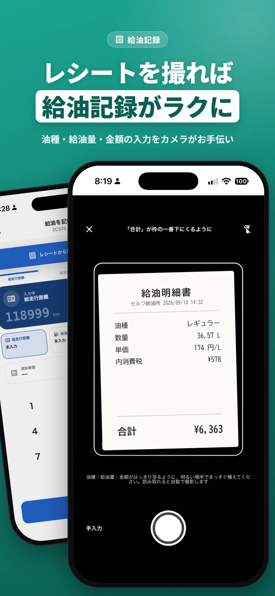
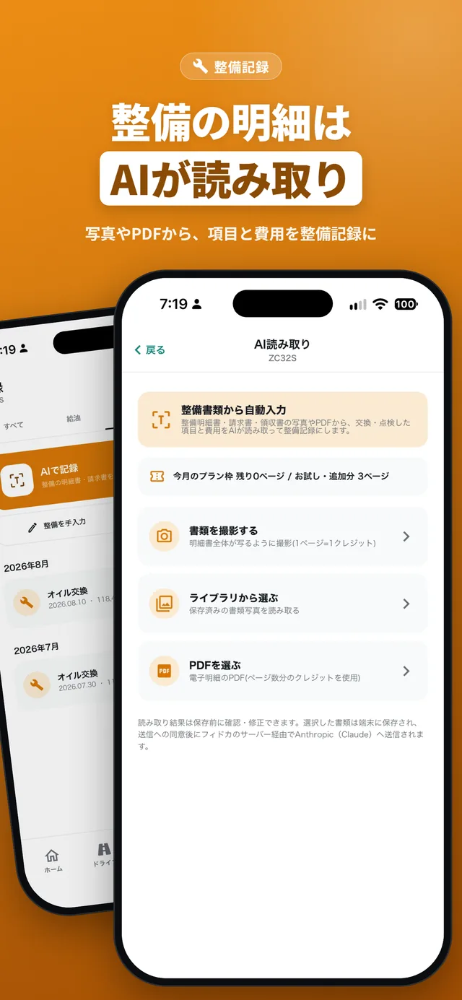
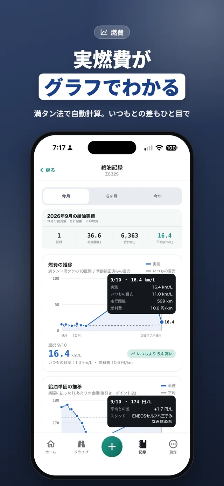
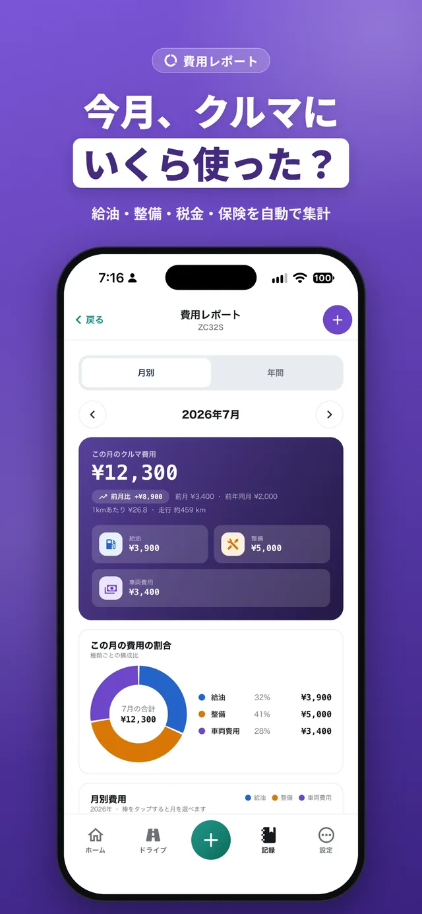
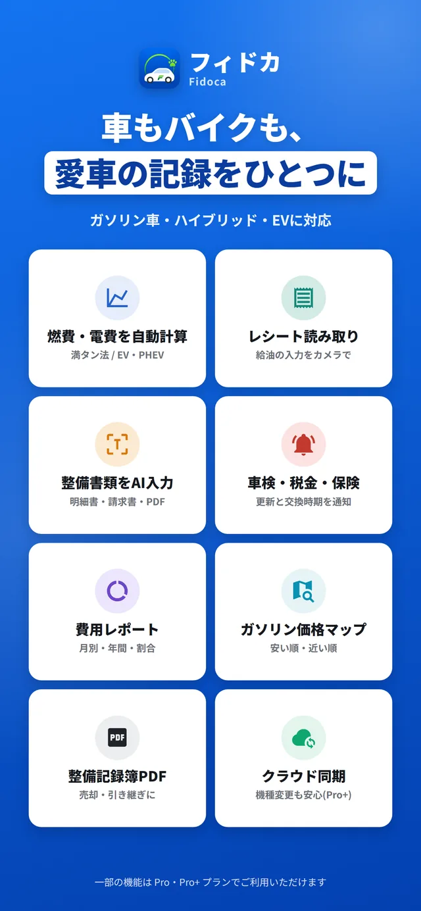
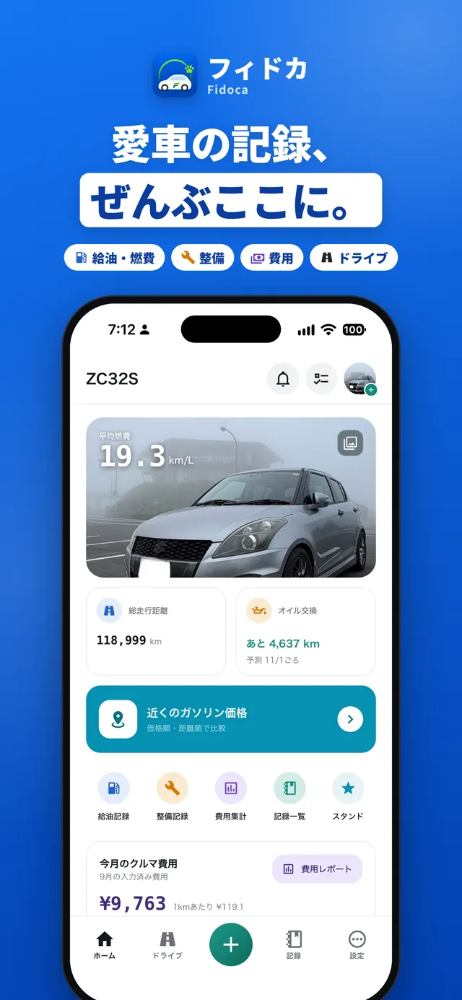
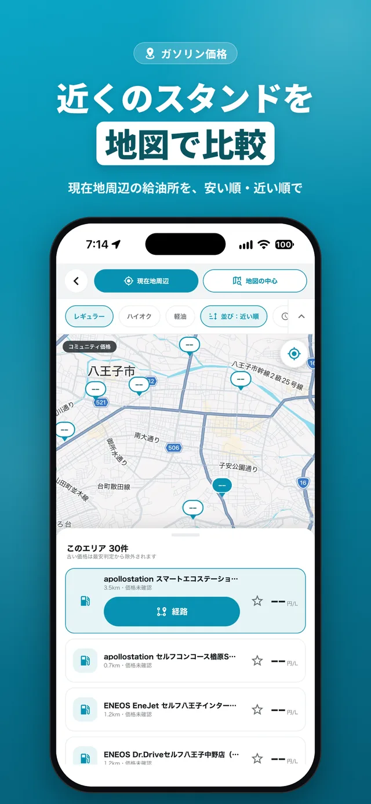
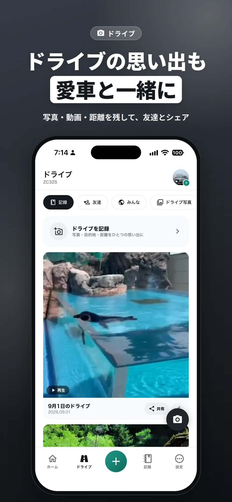

給油記録とレシート読み取り
走行距離・給油量・金額を入力するだけ。レシートをカメラで写せば、油種・給油量・金額の入力をお手伝いします。
NEW ドライブSNSで、愛車の思い出をシェア
フィドカ（Fidoca）は、日本向けの車・バイクの記録アプリです。給油・燃費・整備・車検・保険・自動車税・維持費をまとめて記録し、ドライブの写真・動画は友達や「みんな」とシェアできます。iPhone・Androidに対応し、入力はかんたん、計算と集計は自動です。
iPhone・Androidに対応 · 基本無料 · アカウント登録なしでもすぐ使えます
こんな経験、ありませんか
レシートは財布の中、整備の記憶はあいまい、維持費はどんぶり勘定。フィドカは、そんな「なんとなく」をぜんぶ数字と記録に変えます。
手計算もアプリの乗り換えも面倒で、結局わからないまま。フィドカなら給油を記録した瞬間に燃費まで自動計算します。
整備の時期はつい忘れがち。走行距離と日付にもとづくリマインド通知が、車検やオイル交換の「そろそろ」を教えてくれます。
給油・整備・保険・税金。月別・年別の費用レポートで、愛車にかかったお金がひと目でわかるようになります。
実は近くにもっと安い店があるかも。現在地周辺のガソリン価格を地図と一覧で比較して、経路案内までつなげられます。
フィドカでできること
ガソリン車・ディーゼル・ハイブリッド・PHEV・EV、そしてバイクまで。車両ごとに記録を分けて、燃費も費用も整備も、ドライブの思い出も、ぜんぶここに残せます。
走行距離・給油量・金額を入力するだけ。レシートをカメラで写せば、油種・給油量・金額の入力をお手伝いします。
満タン法の実燃費(km/L)と1kmあたりの走行コストを自動で計算。グラフで調子の変化も追えます。
充電量・電気代・充電前後の残量・EV走行距離を記録。電費(km/kWh)も自動で確認できます。
オイル交換からタイヤ、バッテリーまで。整備明細書・請求書・領収書は写真やPDFからAIがまとめて抽出します。
車検・保険・自動車税の更新時期と費用予測、オイル交換などの整備時期を通知。車検証QRの読み取りにも対応。
現在地周辺のスタンドを価格・距離で比較。お気に入り店舗の価格チェックや経路案内もできます。
給油費・充電費・整備費・車両費用を月別・年間で自動集計。「この車にいくらかかっているか」に即答できます。
写真・動画・距離・天気・メモと一緒にドライブを保存。友達や「みんな」へ投稿して、いいね・フォローでクルマ好きの仲間とつながれます。
給油記録
給油のたびにメモを取る必要はありません。レシートをカメラで写すと、金額・給油量・単価を読み取って入力をお手伝い。保存した瞬間に、満タン法の実燃費と1kmあたりの走行コストまで自動計算されます。もちろん、テンキーでのすばやい手入力にも対応しています。

ガソリン価格マップ
現在地周辺のガソリンスタンドを地図と一覧で表示。レギュラー・ハイオク・軽油の油種を切り替えながら、価格・距離・更新状況をまとめて比較できます。気になる店舗を選べばそのまま経路案内へ。給油記録とつながっているから、「今日はいつもより安く入れられた」まで見えてきます。
EV / PHEV対応
クルマの動力が変わっても、記録の場所は変えなくていい。フィドカはガソリン車・ディーゼル・ハイブリッドに加えて、EV・PHEVの充電記録に対応。充電量や電気代、充電前後のバッテリー残量、EV走行距離を残せば、電費まで自動で見えてきます。PHEVなら給油と充電、両方の記録をひとつの車両にまとめられます。
愛車のすべてを一か所に
整備の履歴も、燃費の変化も、かかったお金も、出かけた思い出も。ぜんぶがつながって、あなたと愛車だけのデータベースになります。
整備明細書・請求書・領収書の写真やPDFから、日付・店舗・走行距離・整備項目・費用をAIが抽出。内容を確認・修正して、複数の整備記録をまとめて保存できます。ディーラーの明細も、量販店のレシートも、ため込んだ紙の束もこれで一気に記録に変わります。

満タン法の区間燃費を季節補正済みの目安と重ねて表示。「いつもよりちょっと悪い」に早く気づけるから、タイヤの空気圧やオイルの交換時期を考えるきっかけになります。

給油・充電・整備・車両費用を月別・年間で自動集計し、内訳と推移をグラフで表示。複数台をまとめた集計もできるので、家のクルマ全体の維持費もすぐわかります。

忘れない仕組み
記録した日付と走行距離から、次の整備や更新の時期を予測して通知。うっかり忘れて慌てることが、ぐっと減ります。
オイル交換・タイヤ・バッテリー・点検など、項目ごとに通知の日程や距離を設定。前回の記録から「あと何km」も見えます。
車検・保険・自動車税の更新時期と費用予測を通知。車検証QRコードの読み取りで車両情報の登録もスムーズです。
通知時刻は好きな時間に変更OK。必要な通知だけを受け取れるので、リマインドがうるさくなりません。
持ち出せる、守れる
記録はまず端末内に保存。必要なときにPDFやCSVで書き出せて、機種変更のときも引き継げます。売却や譲渡のとき、きちんと残した整備記録簿はそのまま愛車の価値になります。

アプリ画面
横にスクロールして、フィドカの画面をひとつずつご覧ください。


始め方はかんたん
App StoreまたはGoogle Playから無料でダウンロード。アカウント登録なしでもすぐ使い始められます。ドライブSNSやAI読み取りを使うときは、アプリかWebで登録できます。
車両名と走行距離を入れるだけ。車検証のQRコードを読み取れば、車両情報の入力もスムーズです。バイクももちろんOK。
給油したらレシートをパシャリ。整備したら明細をパシャリ。ドライブの写真は友達や「みんな」にシェア。燃費も費用も集計も、ぜんぶフィドカにおまかせください。
無料から使える
まずは無料プランで、給油も整備もドライブもたっぷり記録。広告なしで快適に使いたくなったら、いつでもアップグレードできます。
まず記録を始めたい方に
広告なしで、もっと便利に
複数台とクラウドをフル活用
表示はWeb価格(税込)です。App Store・Google Playでの価格は各購入画面に表示され、Web価格と異なる場合があります。アプリで購入したPro / Pro+はWebでも同じプランとして使えます。AI読み取りのページはアプリ内でいつでも追加購入でき、購入分に有効期限はありません。Pro+のクラウド上の写真・動画は、解約または失効から90日後に削除されます(端末内のデータは残ります)。
愛車管理のお役立ちガイド
燃費・整備・維持費の記録を始める前に知っておきたい選び方と、続けるためのポイントを解説します。
満タン法、部分給油、レシート読み取りなど、日本で使いやすいアプリを選ぶ6つの基準。
ガイドを読む 整備・車検オイル交換から車検まで。履歴と次回時期を忘れず、書類もまとめて残すためのチェック項目。
ガイドを読む 税金・維持費給油・保険・税金・整備費を一元化し、月別・年間の支出を正しく把握する方法。
ガイドを読む 給油・レシート日付・油種・給油量・単価・金額を読み取り、正しい燃費記録につなげる確認ポイント。
ガイドを読む EV・PHEV充電量・電気代・残量・EV走行距離を記録し、電費と充電費を把握する方法。
ガイドを読むよくある質問
そのほかのご質問は、サポートまでお気軽にお問い合わせください。
support@fidoca.jp無料プランでは車両1台について、給油・充電・整備・費用の記録、燃費・電費の自動計算、レシート読み取り、ガソリン価格マップ、費用レポート、ドライブ記録まで利用できます。ドライブSNSの閲覧・いいねも、アカウント登録後に無料で使えます。無料プランでは広告が表示されます(ドライブ記録の作成・閲覧・再生には、どのプランでも広告を表示しません)。
基本機能はアカウント登録なしで利用でき、記録はまず端末内に保存されます。初回の案内で登録をおすすめしていますが、「あとで登録する」を選べばそのまま使い始められます。ドライブSNS、AI読み取り、クラウド同期など一部の機能ではログインが必要です。Apple・Google・メールでのログインに対応し、Webからも登録できます。
ドライブ記録の写真・動画・距離・メモを、友達や「みんな」へ投稿できる機能です。フィードの閲覧・いいね・フォローは、アカウント登録後に無料で使えます。投稿は、無料プランなら広告を見てためる投稿チケット1枚で1回。Proは友達への投稿、Pro+は友達と「みんな」への投稿がプランに含まれます。写真の位置情報(EXIF)は投稿時に自動で削除され、通報・ブロックにも対応しています。
はい。フィドカは車だけでなくバイクの管理にも対応しています。車両ごとに給油・整備・費用を分けて記録でき、燃費計算やリマインド通知もバイクで同じように使えます。
使えます。充電量・電気代・充電前後のバッテリー残量・EV走行距離を記録でき、満充電区間または入力したEV走行距離から電費(km/kWh)を確認できます。PHEVは給油と充電の両方をひとつの車両で管理できます。ガソリン車・ディーゼル・ハイブリッドにも対応しています。
整備明細書・請求書・領収書の写真またはPDFから、日付・店舗・走行距離・整備項目・費用をAIが抽出する機能です。結果は保存前に必ず確認・修正でき、複数の整備記録をまとめて登録できます。アカウント登録で無料のお試し枠(累計3ページ)が使え、Proは月3ページ、Pro+は月6ページの利用枠が付与されます。枠を使い切っても、アプリ内でページを追加購入できます(全プラン共通・有効期限なし)。
データのバックアップ機能で、選択中の車両と給油・充電・整備・費用の記録を1つのファイルに書き出し、新しい端末で復元できます(写真・動画とドライブ記録は含みません)。Pro+なら自動バックアップとクラウド同期により、写真・動画やドライブ記録も含めて、新しい端末でログインするだけで引き継げます。
はい。Webとアプリは同じアカウントで購読状態を共有します。同じメールアドレスでログインすると、アプリでも同じプランが有効になります。アプリ内で購入したPro / Pro+も同様にWebで使えます。
レシート画像はサーバーへ送信しません。レシートの読み取りは端末内で行い、給油量や金額が読み取れなかった場合に限り、読み取ったテキストだけをAIで再解析するため送信します。整備書類は、AI読み取りを実行した場合のみ、その都度選択した写真・PDFを処理のためサーバーへ送信します。詳しくはプライバシーポリシーをご覧ください。
フィドカの利用者が給油レシートを撮影したり手入力したりした当日の給油価格を、店舗・油種・単価・日時に絞ってサーバーへ送り、みんなの価格マップに反映しています。価格共有は初回起動時の案内で「おすすめ」として有効になっており、「設定 → データ → ガソリン価格の共有」からいつでもOFFにできます。レシート画像や移動履歴は送信しません。
はい。Android版はGoogle Playで配信しています。ストアで「フィドカ」と検索してもインストールできます。iOS版はApp Storeで配信中で、記録できる内容や燃費の計算方法はiOSとAndroidで共通です。
満タン法で計算します。総走行距離と給油量から実燃費(km/L)を自動計算し、満タンまでの間に入れた部分給油は合算して扱います。燃費は数値として保存せず記録から都度計算するため、あとから走行距離や給油量を直すと燃費も再計算されます。
給油と燃費だけでなく、整備・車検・保険・自動車税までを同じ車両に紐づけて管理でき、ドライブの思い出を写真・動画で残してドライブSNSで共有することもできます。給油レシートの読み取りに加えて整備明細書・請求書のAI読み取りに対応し、周辺のガソリン価格を地図で比較できる点も特徴です。EV/PHEVの充電記録と電費(km/kWh)にも対応しています。
フィドカは日本向けに、円・km/L・km/kWhを前提として作っています。アプリの表示言語は日本語・英語・韓国語・中国語(簡体字・繁体字)から選べます。
FIDOCA — YOUR CAR, YOUR STORY.
毎日の給油も、月イチの洗車も、いつかの整備も、遠くへのドライブも。愛車と過ごす時間のぜんぶを、ひとつの場所に残していこう。
ドライブSNS
愛車との思い出を、
みんなとシェア。
週末のドライブも、ツーリングも、愛車との何気ない毎日も。写真・動画・距離・天気・メモをドライブごとに残して、友達や「みんな」へ投稿できます。フィードでは、ほかのオーナーのドライブから次のお出かけのヒントも見つかります。ドライブ記録の作成・再生には、どのプランでも広告を表示しません。
